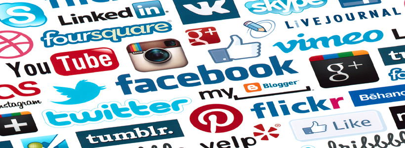

Social Networks
Facebook, Twitter, Google+, YouTube, Pinterest, LinkedIn and other social networks have become an integral part of online lives.
While social networking remember to have following precautions -:
-
Privacy and security settings exist for a reason: Learn about and use the privacy and security settings on social networks. They are there to help you control who sees what you post and manage your online experience in a positive way.
- Once posted, always posted: Protect your reputation on social networks. What you post online stays online. Think twice before posting pictures you wouldn’t want your parents or future employers to see. Recent research found that 70% of job recruiters rejected candidates based on information they found online.
- Your online reputation can be a good thing: Recent research also found that recruiters respond to a strong, positive personal brand online. So show your smarts, thoughtfulness, and mastery of the environment.
- Keep personal info personal: Be cautious about how much personal information you provide on social networking sites. The more information you post, the easier it may be for a hacker or someone else to use that information to steal your identity, access your data, or commit other crimes such as stalking.
- Know and manage your friends: Social networks can be used for a variety of purposes. Some of the fun is creating a large pool of friends from many aspects of your life. That doesn’t mean all friends are created equal. Use tools to manage the information you share with friends in different groups or even have multiple online pages. If you’re trying to create a public persona as a blogger or expert, create an open profile or a “fan” page that encourages broad participation and limits personal information. Use your personal profile to keep your real friends (the ones you know trust) more synched up with your daily life.
- Be honest if you’re uncomfortable: If a friend posts something about you that makes you uncomfortable or you think is inappropriate, let them know. Likewise, stay open-minded if a friend approaches you because something you’ve posted makes him or her uncomfortable. People have different tolerances for how much the world knows about them respect those differences.
- Know what action to take: If someone is harassing or threatening you, remove them from your friends list, block them, and report them to the site administrator.